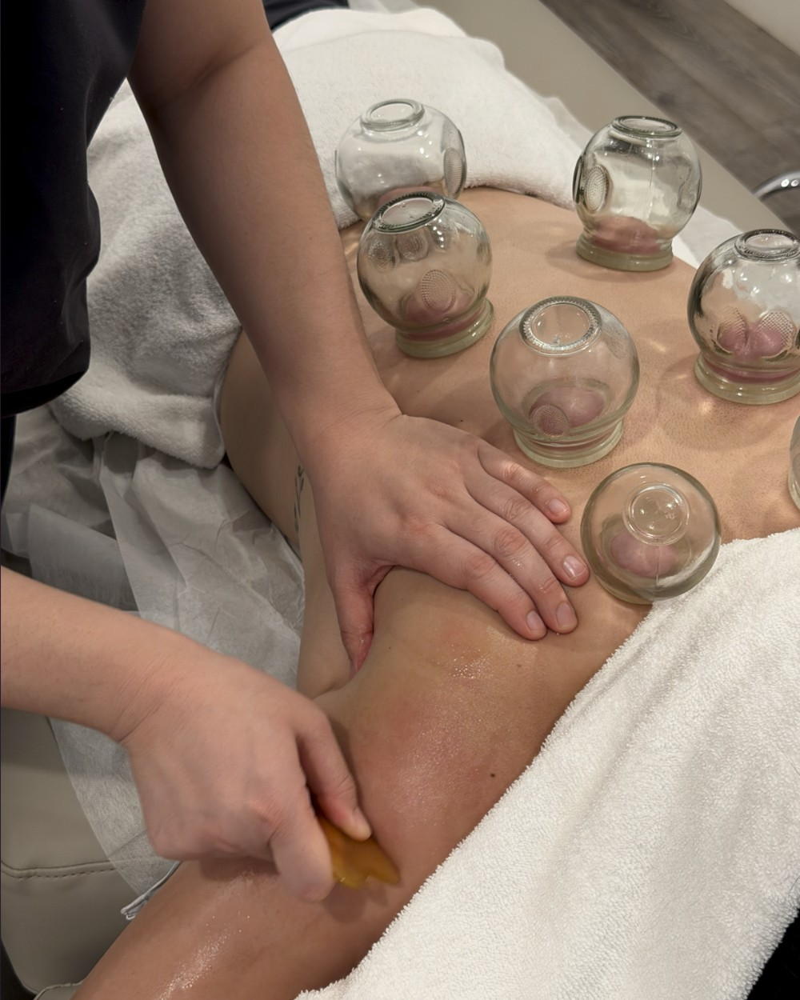

Myofascial Release
Sustained pressure to release restrictions in the connective tissue surrounding muscles — particularly post-surgical scars and old, stuck patterns.
Sessions are condition-driven, not technique-driven. Every visit begins with assessment — the approach follows from there. Technique is selected based on what your body requires at that visit, drawing from the methods below as clinically appropriate.

Sustained pressure to release restrictions in the connective tissue surrounding muscles — particularly post-surgical scars and old, stuck patterns.
Targeted work on trigger points and nerve compression patterns contributing to pain and dysfunction. The headache that lives in the trapezius. The hip pain that starts in the QL.
Structured soft tissue manipulation addressing deeper layers of muscle and fascia — matched to what your tissue can receive that day.
Assisted range-of-motion and lengthening work integrated where clinically indicated — between hands-on segments, never as filler.
Instrument-assisted soft tissue technique to address fascial restrictions, improve circulation, and reduce inflammation.
Negative pressure applied to soft tissue to decompress underlying structures and release chronic tension patterns. Marks fade in days.
Gua sha and cupping therapy may be incorporated into sessions where clinically indicated, at no additional charge.
A short list of what other studios charge for. Here it's just part of the work.
Incorporated where clinically indicated. No additional charge.
Static or gliding. Used as the case calls for it.
Maintained for every client to track progress and continuity of care.
Communication with your referring provider to align treatment when relevant.
Provided on request for HSA, FSA, or out-of-network reimbursement.
To acupuncture, chiropractic, PT, or imaging when the table isn't enough.